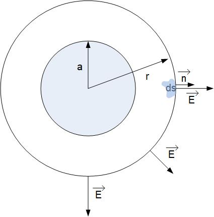
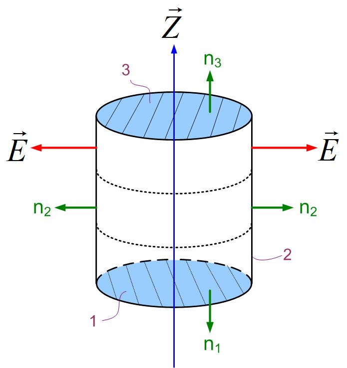
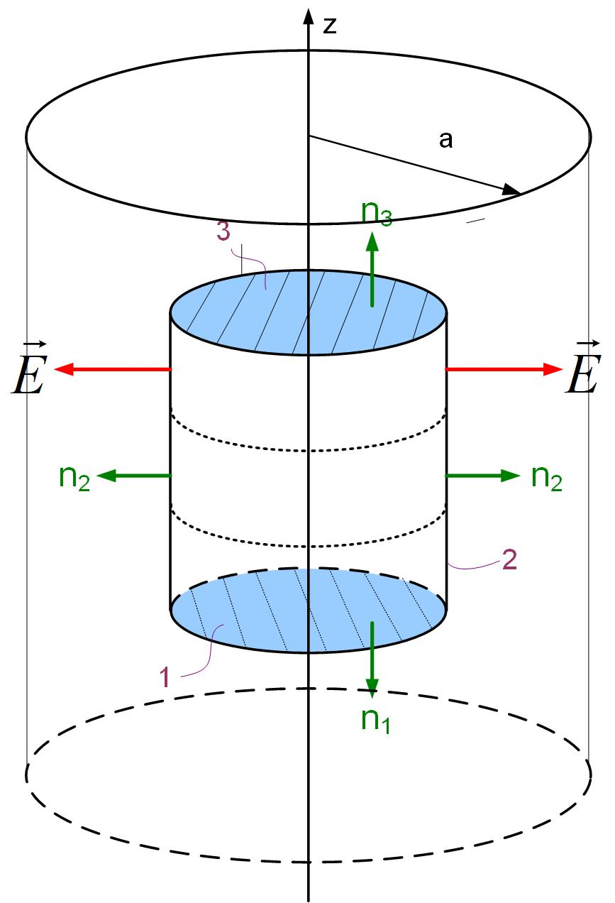

zero

Figure 1: Electric field of a point charge
There are several ways of visualizing fields:
Let’s assume that in this example, we’ll visualize a field with a density of field lines per area, as we have shown in 3 above. Rivers are symbols of flux. For example, if we imagine a river flow and a small rectangular frame submerged in it, we can qualitatively explain the ”amount” of the field going through a surface. A simple way to understand flux is to count how many field lines poke a surface. If many field lines poke the surface, the flux is strong; otherwise, the flux is weak. The flux is the rate of flow of water through the frame.
Mathematically, the flux of any vector through a surface is defined as
In the equation above, the surface is a vector so that we can define the direction of the flow of the vector. The surface vector is defined as a surface of the frame multiplied with a vector perpendicular to the surface . The flux is the highest if the normal to the surface and the vector field point in the same direction.
Observe the simulation below, change the angle between the frame and the field, then change the strenght of the field. How does the flux change?
Gauss’s Law states that the flux of electric field through a closed surface is equal to the charge enclosed divided by a constant.
It can be shown that no matter the shape of the closed surface, the flux will always be equal to the charge enclosed. This proof is beyond the scope of these lectures.
Gauss’s Law is used to find the electric field when a charge distribution is given. We can apply Gauss’s Law using analytical expressions only to a specific set of symmetric charge distributions.
The key to finding the Electric field from Gauss’s Law is selecting the simplest surface to perform the integration in Equation eq:gaussLaw. If the simplest surface is found, the above equation simplifies to , where is the surface (or sum of surfaces) where the flux exists, E is the electric field on that surface, and Q is the charge enclosed.
Observe the 2D flux from electric charge through a square. Set all charges to zero, except for one. Move the charge inside and outside of the square. What can you conclude about the flux when the charge is inside the square, and what when it is outside?
The key to applying Gauss’s Law to find the field from a symmetric charge distribution is to find the surface so that the normal to the surface is either perpendicular or parallel to the electric field. Practically speaking, this means that if the charge distribution has spherical symmetry, we’ll choose a sphere for the surface. If the charge density has cylindrical symmetry, we’ll choose a cylinder for the surface. If the charge density is an infinite plane, we’ll choose a box (or, as we’ll see later, a cylinder again). As you will see, before we apply Gauss’s Law to find the electric field, we have to know how the electric field looks from a particular charge distribution so that we can carry out the integration.
In the equation above, you can see that the integral is just the surface area of the chosen surface, so the equation further simplifies to
Our first example is to find the electric field of a point charge +Q.
To start this problem, we have to know the direction of the field. The electric field lines from a point charge are pointed radially outward from the charge (Figure fig:eField). Mathematically we can write that the field direction is . We have to know the direction and distribution of the field if we want to apply Gauss’s Law to find the electric field.
We want to find the magnitude of the electric field as a function of distance r from the charge. To do this, we will enclose the charge with an imaginary surface. We first have to decide on what kind of imaginary surface we are going to use in this case. Since the field has spherical symmetry, we will use a sphere, as shown in Figure fig:gaussPoint. There are multiple reasons why we should use a sphere:
Because the electric field is in the same direction with the outward normal to the sphere as shown in Figure fig:gaussPoint, the dot product becomes just the product of E and dS , and the Gauss’s law equation becomes
Since the electric field is constant everywhere on the surface, we can take it out of the integral.
In the above equation, the is just the surface area of the sphere, .
The final expression for the magnitude of the field is:
Note that we only found the magnitude of the field in the above equation. We started this problem with the knowledge of field radial direction. So the final expression for the field is
Note that this equation can also be obtained from Coulomb’s Law. One last step in finding the electric field is to find the total charge enclosed by the imaginary surface S. Depending on whether we’re looking for the field inside or outside of a charge distribution, and whether the charge distribution is a volume charge distribution , surface charge distribution or line charge distribution , the whole or fraction of volume V, surface S or line l of the charge distribution will be enclosed.
A spherical region of radius a is charged with uniform volume charge density =const. Find the field inside the spherical region of charge at a distance r from the center of the charge density and the field outside of the spherical region of charge at (another) distance r away from the center of the charge.
We will first look at the field outside of the spherical charge distribution. This process is the same as in the previous problem, where we found the field from a point charge. Following the reasoning in the previous problem, we select a sphere for the integration surface. It is important to mention that we pick a point outside of the distributed charge at the distance r from the center, and that will be one point on the sphere’s surface. We picked a point at random distance r, not at r=a because we want to find out electric field anywhere outside of the charge distribution E(r), and r could be any point .

Because the electric field is in the same direction with the outward normal to the sphere as shown in Figure fig:GaussSphereOut, the dot product becomes just the product of scalars E and dS , and the Gauss’s law equation becomes
Since the electric field is constant everywhere on the surface, we can take it out of the integral.
In the above equation, the is just the surface area of the sphere, .
The final expression for the magnitude of the field is:
Note that we only found the magnitude of the field in the above equation. We started this problem with the knowledge of field radial direction. So the final expression for the field is
Note that this equation can also be obtained from Coulomb’s Law. The charge is the total charge in the spherical volume where the charge is located. If the total charge in the volume was known, then this is the solution. However, in this problem, the charge density is known, so we have to find the total charge.
Since the charge density is constant, it can be taken outside of the integral.
The integral above is then just the entire volume of the charge distribution, which is . The final expression for the electric field is
Note that now the electric field is inversely proportional to the square of the distance from the center of the sphere, . The electric field decreases as we move away from the sphere.
Inside the spherical charge distribution, we’ll again use a spherical imaginary surface S to enclose charge because of the spherical symmetry of the problem. The normal to the imaginary surface S is in the same direction with the electric field inside the spherical charge distribution as shown in Figure fig:gaussSphereIn, and therefore the same analysis can be applied as above to get to the conclusion that:
The difference in the analysis here is if we look at the right side of Gauss’s law equation because we now have to determine the amount of charge enclosed by the imaginary surface we created. The charge enclosed in the imaginary surface is not the total charge Q. It is a fraction of the total charge. What fraction of the charge is enclosed? It is the fraction of the charge in the volume enclosed by the surface S.
Since the charge density is constant, it can be taken outside of the integral.
The integral above is then just the fraction of the volume of the charge distribution enclosed by the surface S, which is . The final expression for the electric field is
Note that now the electric field is proportional to the distance from the center of the sphere, , the field increases from the center of the spere out until . At , the entire charge has been enclosed, and the field is maximum at that point.
A cylindrical region of radius a and infinite length is charged with uniform volume charge density =const and centered on the z-axis. Find the field inside the cylindrical region of charge at a distance r from the axis of the charge density and the field outside of the spherical region of charge at (another) distance r away from the z-axis.
We will use Gauss’s Law to solve this problem.
We first look at the field outside of the cylindrical charge distribution. The wire is shown as a blue line in the direction of the z-axis, as shown in Figure fig:gaussLineOut. Because of the symmetry of the problem, we select a cylinder for the closed surface S. It is important to mention that we pick a point outside of the distributed charge at the distance r from the z-axis. The point that we picked is one point on the sphere’s surface. We picked a point from the z-axis at a distance r, not at r=a, because we want to find out electric field anywhere outside of the charge distribution E(r), and r could be any point . Gauss’s Law states that

We will now apply Gauss’s law to the three surfaces shown in Figure fig:gaussLineOut. The cylindrical surface consists of three surfaces: two bases S1 and S3 and the side surface S2. The normals to the bases are S1 and S3 are , and the normal to the side surface is . We can now split the flux of the electric field vector (the left-side of Gauss’s law) through this closed cylindrical surface intro three integrals:
The electric field shown in Figure fig:gaussLineOut is in the radial direction. The electric field lines only poke the side surface S2 and not surfaces S1 and S3. We, therefore, see that the flux through surfaces S1 and S3 is zero. This can also be shown mathematically. For the bases of the cylinder, the dot product between the top surface vector and the electric field vector in Gauss’s law becomes , and the Gauss’s law equation becomes
Since the electric field is constant everywhere on the side surface, we can take it out of the integral.
In the above equation, the is just the rectangular surface area of the side of the cylinder, . Where r is the radius of the cylinder, and l is the length of the cylinder.
From here we can find the magnitude of the field:
Note that we only found the magnitude of the field in the above equation. We started this problem with the knowledge of the field’s radial direction.
The charge is the total charge in the spherical volume where the charge is located. If the total charge in the volume was known, then this is the solution. However, in this problem, the charge density is known, so we have to find the total charge.
Since the charge density is constant, it can be taken outside of the integral.
The integral above is then just the entire volume of the charge distribution, which is . The final expression for the electric field is
Note that now the electric field is inversely proportional to the distance from the z-axis, . The electric field decreases as we move away from the sphere, but slower than in the case of the sphere of charge.
To find the electric field inside the cylindrical charge distribution, we zoom in on the wire in the previous figure and select a cylindrical imaginary surface S inside the wire, as shown in Figure fig:gaussLineIn. Since the electric field is in the same direction inside the wire, and the flux of the electric field is the same, we conclude that the left side of Gauss’s Law is the same as in the previous case.
The difference here is the amount of charge enclosed by the surface S.
Since the charge density is constant, it can be taken outside of the integral.
The integral above is then just the fraction of the volume of the charge distribution enclosed by the surface S, which is . The final expression for the electric field is
The electric field is proportional to the distance from the center of the sphere, , the field increases from the center of the spere out until . At , the entire charge has been enclosed, and the field is maximum at that point.

An infinite plane of charge has an electric field in the direction away from it, as shown in Figure fig:3DFieldInfinitePlane. In this figure, the light blue plane represents the charged plane, and only electric field vectors are represented above the plane. Below the plane, the vectors will be in the opposite direction, away from the plane.
The flux of the electric field vector is zero for any frame that is perpendicular to the plane of charge. For our imaginary surface, we can then use a box, where the flux will only exist through the top and bottom surfaces that are perpendicular to the field, or we can use a cylinder whose bases are parallel to the plane, as shown in Figure fig:gaussPlane.
We can now separate the integral around the closed cylindrical surface to three surfaces, two that are parallel to the plane of charge, where the flux is not zero, and one side surface where the flux is zero.
Mathematically the dot product between the electric field and the normal to the cylindrical top (S3) and bottom surface (S1) is just the product of the magnitudes of E and dS . The dot product on the side surface (S2) is zero, because the angle between the normal to the surface and the electric field is , therefore the . We can subsequently take the electric field outside of the integral, and the integral around the closed surface then becomes
The integral of surface S1 and S1 is just the surface area of two surfaces.
In the above equation, the ration is just the surface charge density . The final electric field expression for the infinite sheet of charge becomes
Note that in the above expression, we added because we knew ahead of time the direction of the electric field. Below the z-axis, it is in the negative z-direction , and above the z-axis, it is in the positive z-direction . Further, the electric field does not depend on the distance from the infinite plane. It is a constant that only depends on the surface charge density and the dielectric permittivity of surrounding space .
A parallel-plate capacitor can be modeled with two infinite parallel plates of opposite charge densities. To find the total field, we can use the principle of superposition, as shown in Figure Gaus2Plane. The Figure shows first just the negative sheet of charge (the first region to the left), then only the positive sheet of charge (the region between two red vertical lines), and finally both sheets of charge in the region to the right. We first find the field separately for the negative sheet of charge, then the positive sheet of charge, finally, we sum them up to get the total field.
In the previous section, we found that the electric field from an infinite sheet of charge is constant. The electric field anywhere around the negative sheet of charge is
The electric field, due to the positive sheet of charge, is
If you look at the direction of the field, the fields from individual plates between the plates of the capacitor add up, and the fields above and below the capacitor subtract. The final field is only between the plates of the capacitor, and it is equal to double the value of the one sheet of charge.